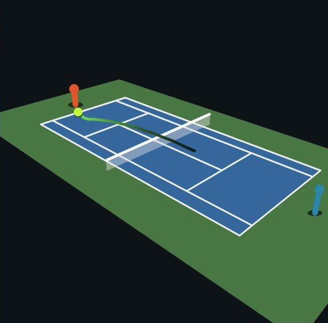
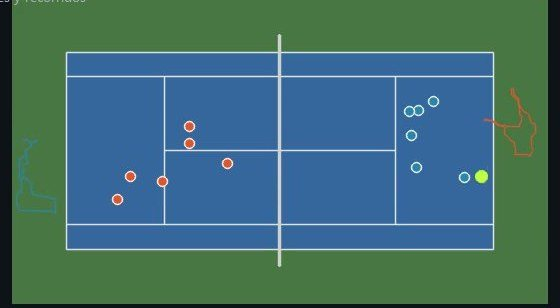
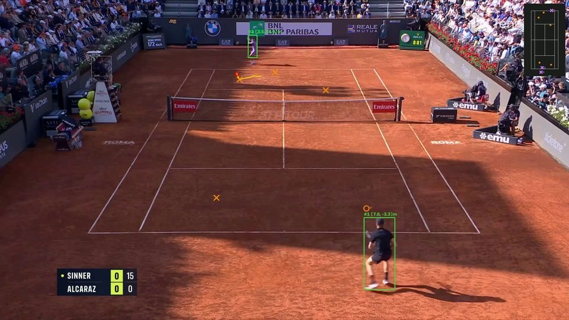

Computer vision · Tennis · 2026
TennisVision
Broadcast video in, shot-by-shot data out: every shot, bounce and player position of a match, with the ball rebuilt in 3D.

96%of 3,199 hand-checked shots and bounces detected
99.5%of serves found
97%clean points on matches it never saw, clay and grass included
9.5 km/hserve-speed error against the official radar display
The problem
Shot-level tennis data (where every ball bounces, how fast, who hit it) comes from multi-camera systems installed at a few venues. TennisVision gets it from a single broadcast feed.
How it works
- Sceneskeep the main-camera shots
- ScoreboardOCR: server, score, serve speed
- PlayersRF-DETR + ByteTrack, feet → metres
- Courtown keypoint network, per-frame homography
- Ballfull-frame detector + native-resolution crop refinement
- Eventsevent network + rule-aware decoder
- 3Dflight fit with gravity, drag and spin
Engineering choices
- Our own court detector. 14 court keypoints per frame, trained from scratch on 4,950 images from 5 matches and 3 surfaces: 0.68 px error against the painted lines, versus 2.11 px for the off-the-shelf model it replaced.
- Grammar over the events. A neural event detector proposes shots and bounces; a decoder that knows the rules (shot, bounce, shot…) arbitrates. On 439 hand-reviewed points this cut errors from 195 to 144.
- Physics, not interpolation. The ball between two events is a fitted 3D flight. The broadcast camera zooms, so it is modelled with a fixed centre and a focal length per frame.
- The scoreboard is data too. OCR reads server, score and the official serve speed, which became our yardstick for speed error (it started at 33 km/h).
Amateur version
A second line of work adapts the system to a single fixed amateur camera with no scoreboard. Rallies are cut by detecting the serve pose, and the score is rebuilt from the structure of the match: with clean tracks, 38 of 38 serves found and the set reconstructed correctly.


About the data. Built only with permissively licensed components and our own code. Match footage belongs to its broadcasters; it is not redistributed here.